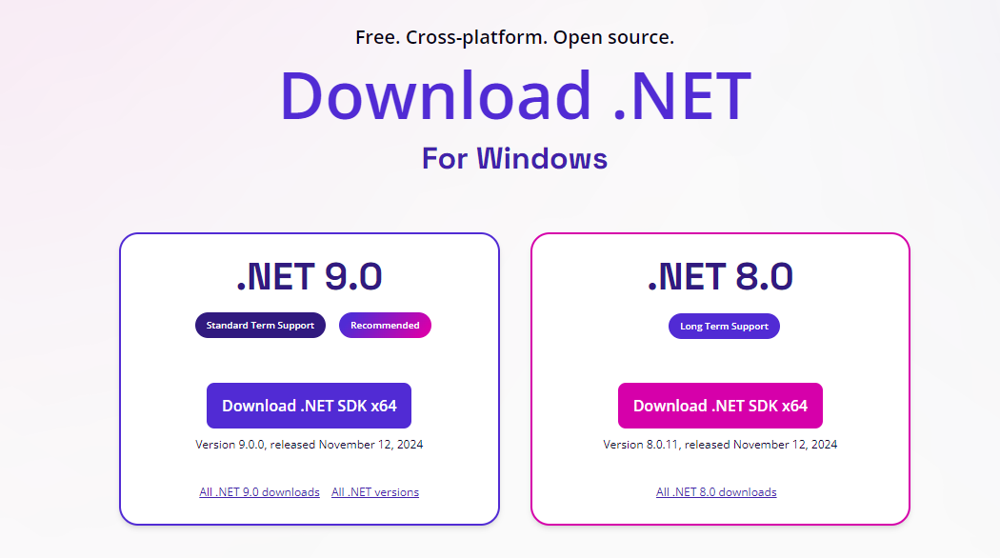

SETUP AND INSTALLATION OF NUGET
Various steps to follow
- Step 1: Install .NET SDK in NET download page in Windows .
- Step 2: Install visual studio code if not install , once there install the C# extension, this extension provides support for the .NET Development.
- Step 3:Create a new .NET project via the terminal by typing this command , after, navigate to the project directory using the cd command.
- Step 4 :Add nuget packages using the command , Also Restore the packages using the command .